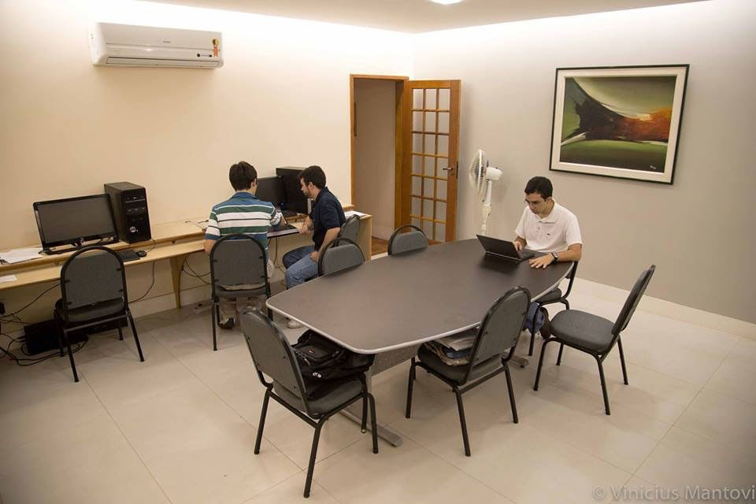
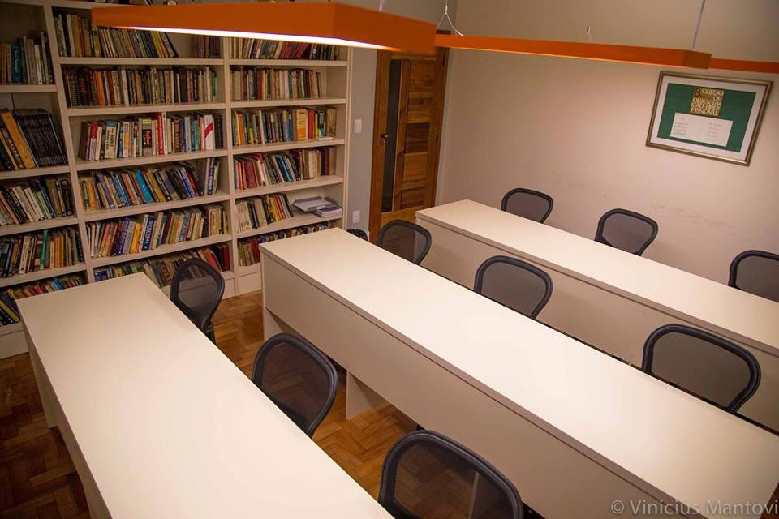
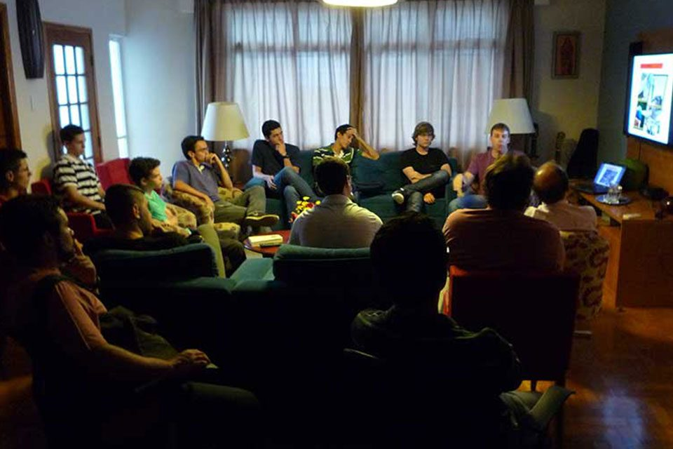
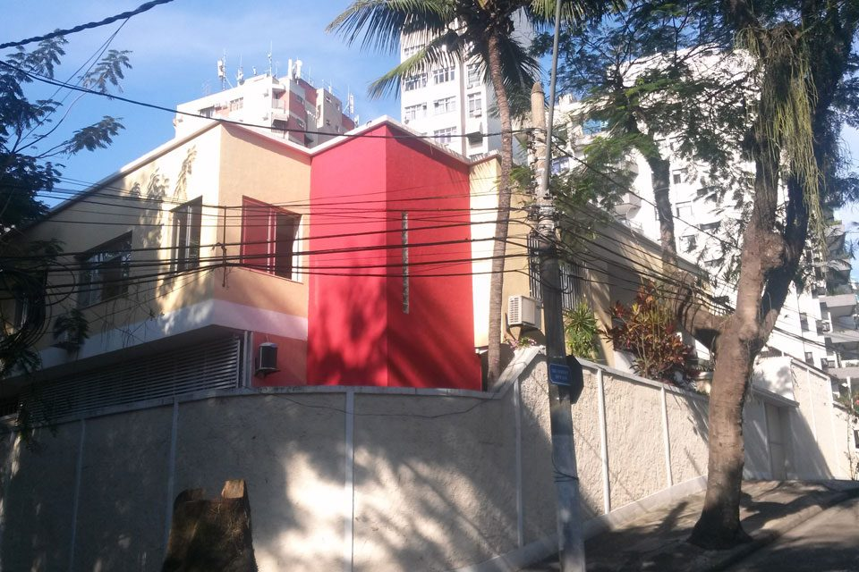

Quem somos
Formação da juventude num ambiente de amizade, valores éticos e vivência das virtudes.
Nosso ideal
O Centro Cultural Boa Viagem visa a formação da juventude, promovendo atividades culturais, sociais e profissionais dentro de um saudável ambiente de amizade, de valores éticos e vivência das virtudes. No seu projeto pedagógico, busca contribuir para o desenvolvimento de qualidades nos universitários que os tornem melhores pessoas, como a sinceridade, a fortaleza, a justiça, o domínio próprio e a solidariedade — virtudes que levarão para toda a vida pessoal e profissional.
As atividades procuram fomentar a sadia e positiva visão crítica do momento cultural, a capacidade de síntese, a desfragmentação do saber e a perspectiva holística do mundo. O ponto de partida é a concepção da universidade como o lugar onde se cristalizam as experiências humanas grandes e fundamentais (Josef Pieper). A origem do próprio nome, universum, exprime o relacionamento com a totalidade do real: a “reunião de todos os saberes”.
No entanto, é cada vez mais difícil encontrar essa plenitude. Os cursos universitários visam especializações cada vez mais estreitas, a sociedade discute o irrelevante e as pessoas perdem os valores de referência. Sem concorrer com a formação técnica das universidades, o “algo mais” que o CCBV oferece é chamar a atenção para as perguntas que todo homem enfrenta: Quem sou eu? Quais os valores necessários para realizar-me? Qual o sentido da minha vida? O que significa ser melhor e como consegui-lo?
Mensagem do diretor
Contrariando as suas origens e o seu próprio nome, a universidade de hoje está cada vez mais especializada. Em vez de formar o aluno num saber universal e prepará-lo para a vida em toda a sua plenitude, busca-se cada vez mais o concreto: aprender uma técnica, resolver um problema, usar um instrumento. O CCBV procura ampliar essa formação oferecendo atividades culturais, profissionais e de formação humana e espiritual, que proporcionam valores éticos e ideais e melhoram a visão de si próprio e do seu futuro, do mundo e da realidade.
Raul Bernardo Vidal Pessolani, DSc – Professor Associado do Departamento de Engenharia Mecânica da Universidade Federal Fluminense
Nossa história
O Centro Cultural Boa Viagem surge como continuação do Centro Cultural Icaraí, mantido pela associação civil ACES, que abriu as portas em outubro de 1988. Durante esse período, funcionou em sedes alugadas, primeiro na rua Geraldo Martins e depois na Av. Ary Parreiras. Em novembro de 2011 adquiriu-se a sede definitiva, que, após uma reforma de dois anos com a ajuda de muitas pessoas, começou a funcionar em fevereiro de 2014.
Nossa estrutura




- Duas salas de estudo individual para universitários, para 10 e 12 pessoas
- Duas salas de estudo para colegiais, para 8 e 15 pessoas
- Sala de computadores
- Sala para estudo em grupo para 10 pessoas
- Sala de seminários e auditório multimídia
- Sala de estar para conferências, ampliável para 60 pessoas
- Capela para 20 pessoas, com expansão para mais 40 lugares
- Campo de esportes e de lazer
Perguntas frequentes
O que é o CCBV?
É um centro cultural com uma residência masculina, que tem salas de estudo e biblioteca e está aberto a estudantes colegiais e universitários.
Qual é a finalidade do CCBV?
Proporcionar uma boa formação profissional, humana, cultural e espiritual para as pessoas que o frequentam.
Que tipos de atividades há no CCBV?
A principal é o estudo individual nas salas de estudo. Há também tutorias de estudo, palestras com personalidades, grupo de humanidades, curso de liderança, passeios, excursões e lazer. Para os que desejarem, o capelão do centro dá uma palestra semanal de formação humana e cristã. A formação cristã é confiada ao Opus Dei, instituição da Igreja Católica.
Sou obrigado a fazer essas atividades?
Não. No centro se respira um grande clima de liberdade e respeito: cada um participa das atividades que quer.
É preciso pagar alguma taxa ou mensalidade?
Não. O centro não tem fins lucrativos e a frequência é gratuita. Em algumas atividades cobra-se uma taxa para cobrir o custo da própria atividade (folhetos, equipamentos etc.). Quem quiser pode contribuir, material ou financeiramente, para a manutenção da casa.
Qual é o horário das salas de estudo?
De segunda a domingo, das 8h às 21h.
Posso trazer amigos e estudar em grupo?
Sim, mas tenha em conta que há salas destinadas ao estudo individual e outra para estudo em grupo.
Quem pode frequentar?
Estudantes do sexo masculino. Por ser um ambiente mais cuidado, pede-se que venham de calça comprida.
Por que mulheres não frequentam?
Por se tratar de uma residência masculina. Quem desejar pode procurar o centro cultural feminino, que funciona num esquema semelhante.
A quem pertence a casa?
À ACES, associação civil sem fins lucrativos. Veja também aces-rio.org.br.
De onde vieram os recursos para a reforma?
De contribuições de pessoas físicas e empresas.
O que é o Opus Dei?
É uma instituição da Igreja Católica fundada por São Josemaria Escrivá, que proporciona formação espiritual aos que desejarem. Mais informações em opusdei.org.